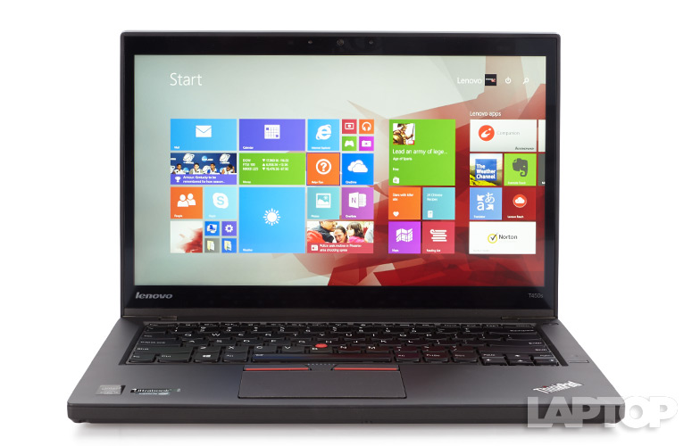

En iyi iþ laptopu istiyorsanýz, Lenovo'nun ThinkPad T450s modeli profesyoneller arasýnda favori ve güvenilirdir.
Lenovo T450s deðerlendirmelere göre, saðlam, hýzlý, güvenilir ve iþ odaklý görevler için oldukça idealdir. Ayný zamanda kolayca deðiþtirilebilir bir batarya ve dokunmatik ekran mevcut. Lenovo T450s, taþýmasý kolay, ince ve hafif bir ultrabook olarak açýklandý.
Bu bilgisayarýn yenilenmiþ versiyonunun Þubat ayýnda geleceði söyleniyor. Eðer en iyisini almak istiyorsanýz bir ay daha beklemeniz gerekecek.

Fiyatý: 5.870.00 TL'den baþlýyor